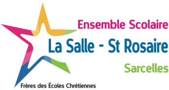
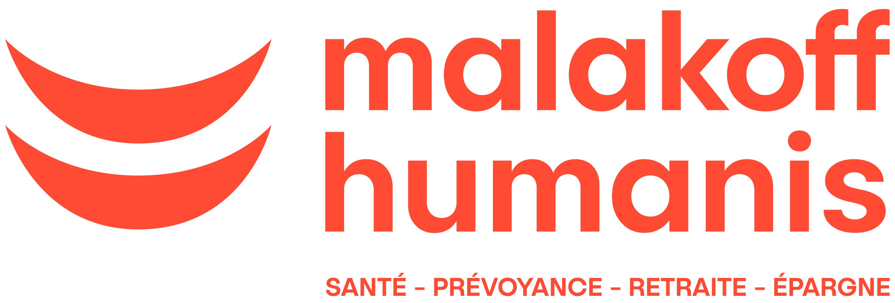
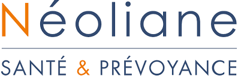
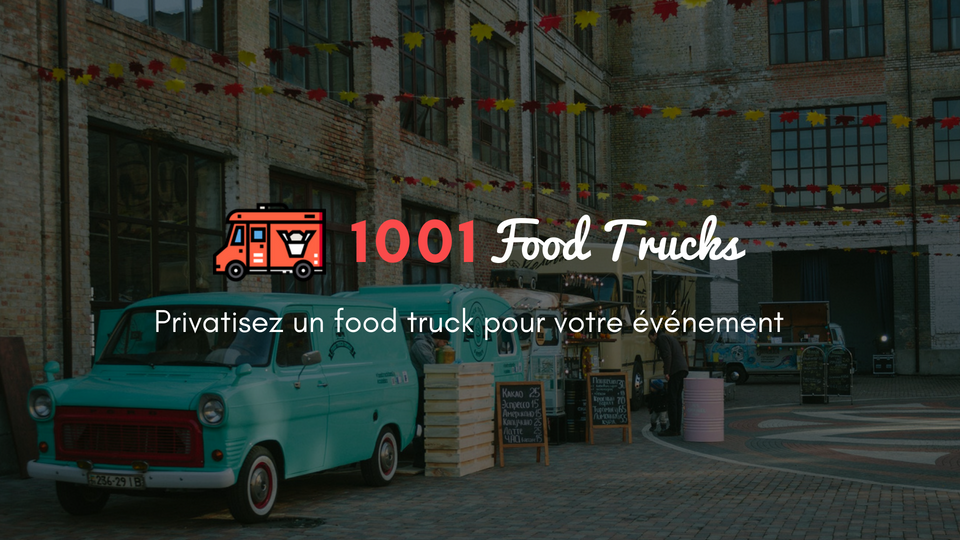
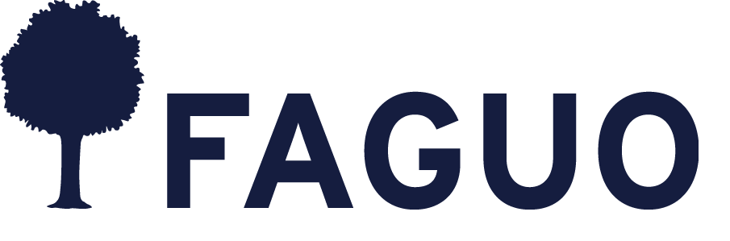

Hello ! Moi c'est Kurynchi Radhakrishnan 👋🏽
Autonome, curieuse et créative, j'aime enrichir mes connaissances et mes compétences autant dans la vie professionnelle que personnelle.Je suis actuellement alternante chez Malakoff Humanis en tant que chargée de produit dans le cadre de les deux ans de Master à l'IESEG SCOOL OF MANAGEMENT 👩🏽💻. Grande fervente du « quand on le veut on le peut 💪🏽 » je suis la personne pour vous !
Découvez mon profil🎓FORMATION🎓
MASTER DIGITAL MARKETING ET INNOVATION
IESEG SCHOOL OF MANAGEMENT | 2020 - 2023

Cours suivis : Web analytics, Philosophie de l'innovation, Innovation, Open Innovation , Etude qualitative, Intensive Writing publishing , Growth Hacking, Comportement du consommateur, CRM, Manager leader
DUT TECHNIQUES DE COMMERCIALISATION
IUT PARIS DESCARTES | 2018- 2020

Cours suivis : Marketing, E- marketing, marketing direct, comptabilité, négociation, gestion financière, communication, Entrepreneuriat, études recherches commerciales, gestion de relation clients
BACCALAURÉAT ÉCONOMIQUE ET SOCIAL
LA SALLE - SAINT ROSAIRE | 2018
Option mathématiques - Mention assez bien
📍EXPERIENCES📍
CHARGÉE DE PRODUIT MARKETING
MALAKOFF HUMANIS | Septembre 2021 - à présent
- Mix marketing et benchmark produits
- Réalisation de diagnostic et analyse de reportings
- Réalisation des comptes rendus des ateliers ou comités
RESPONSABLE MARKETING DIGITAL
Studyland CAN | Avril - juillet 2021
- Optimisation du référencement du site internet - SEO/ SEA
- Réalisation de contenu pour le site internet
- Optimisation de l’identité visuelle
ASSISTANTE MARKETING PRODUIT ETCOMMUNICATION
Groupe Santiane | Avril - mai 2020
- Benchmark produit et recommandations stratégiques
- Rédaction d'articles pour améliorer le référencement (SEO)
- Supports pour la rédaction de communications internes / externes
ASSISTANTE COMMERCIALE ET MARKETING
1001Foodtrucks.com | Septembre - juin 2020
- Prospection commerciale
- Optimisation des process
- Développement SEO du site internet
VENDEUSE CONSEIL
Faguo corner Citadium | Avril - mai 2019
- Accueil, prise en charge des clients
- Conseil et ventes, merchandising
- Réassort et rangement
📈COMPETENCES📈
LANGUES
- ✔️Anglais
- ✔️Espagnol
- ✔️Tamoul
INFORMATIQUES
- ✔️Miscroft Office
- ✔️Canva
- ✔️Mailchimp
- ✔️Wix
- ✔️SPSS IBM
CERTIFICATIONS
- ✔️Cambridge - Starters to KET
- ✔️TOEIC - 905
- ✔️WAGON - UX/UI
- ✔️Google certifications - Google Analytics